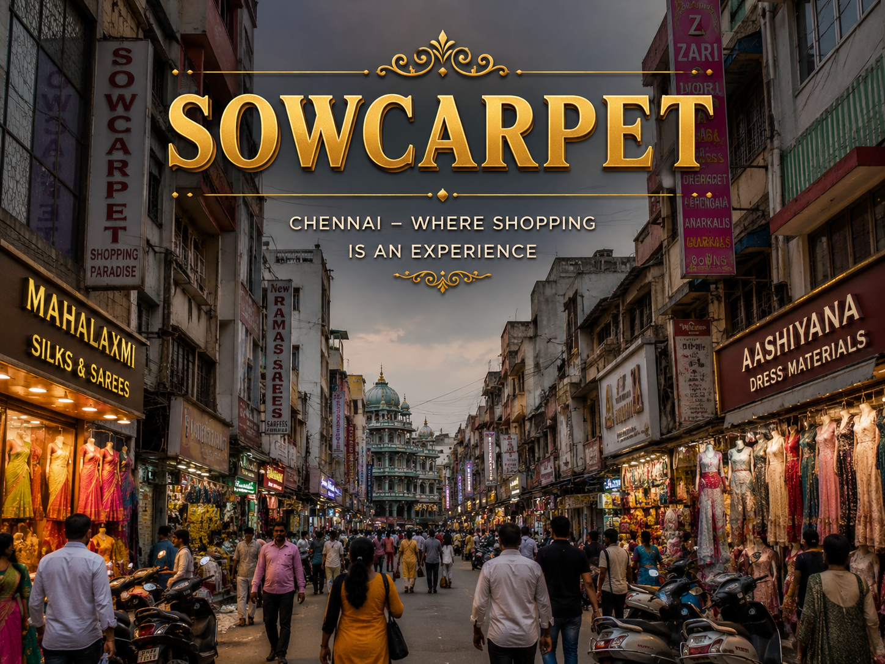

|
 |
|
| | | | | | | | | | | | | | | | | | | | | | | | | | | | | | |
Sowcarpet is one of Chennai’s oldest and busiest commercial neighborhoods, well known for its crowded markets, traditional shops, and vibrant street life. The area is famous for wholesale trading, textiles, jewelry, household items, and delicious North Indian street food. People from different communities live and work together, creating a rich cultural atmosphere. Narrow streets filled with colorful stores and busy shoppers make the place lively throughout the day. Popular snacks like chaat, kachori, and sweets attract food lovers from across the city. Sowcarpet represents Chennai’s blend of heritage, business growth, culture, and strong local community traditions. |